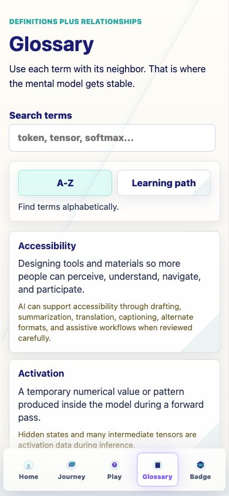
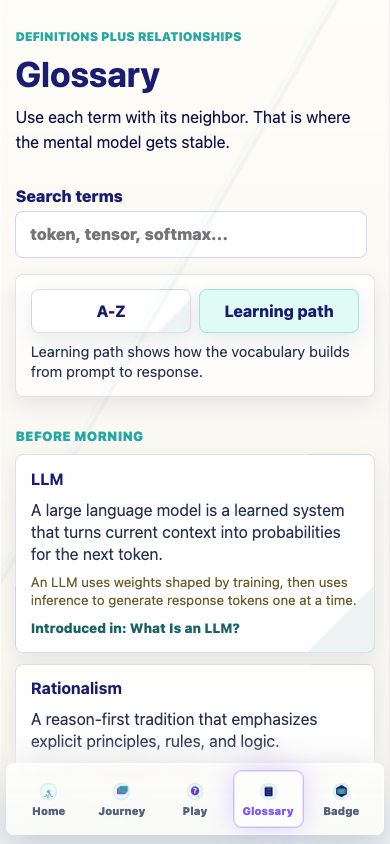
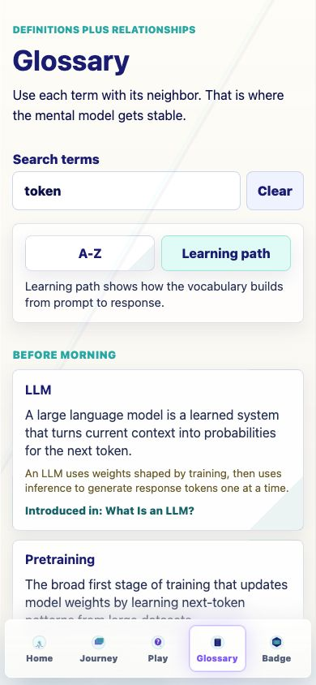
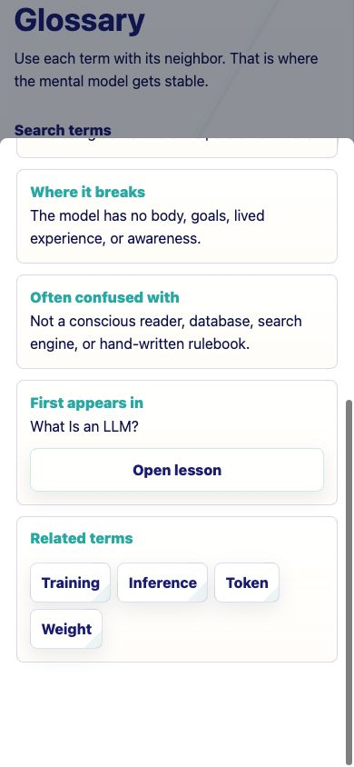
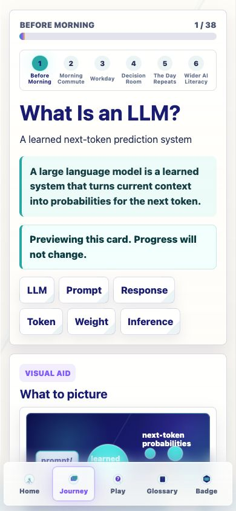
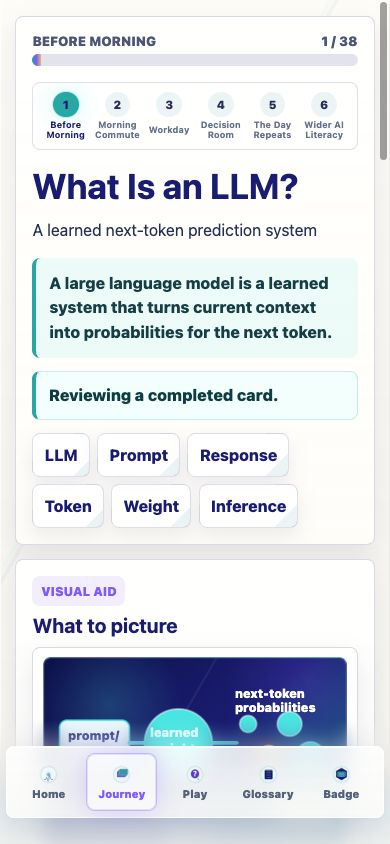
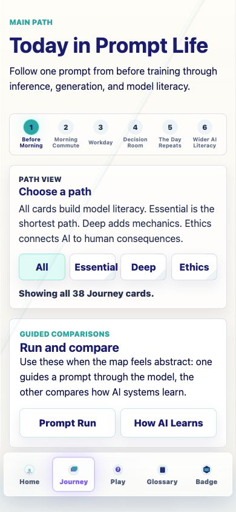
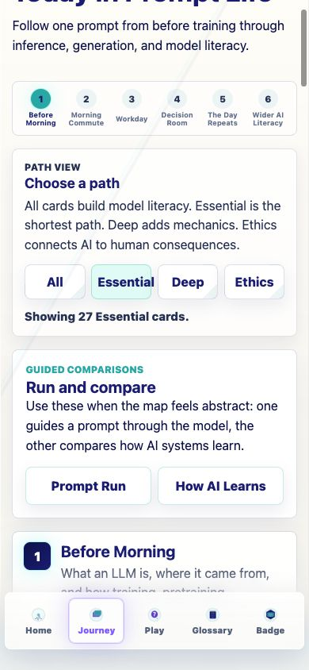
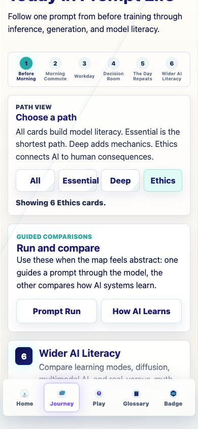

Prompt Life v0.14
Glossary + Journey Path Clarity Report
Internal report generated 2026-06-05. This PDF wraps the response summary and screenshots for the v0.14 mobile-first glossary and Journey filtering pass.
What Changed
The pass keeps the curriculum stable while making the app easier to skim: glossary terms can now be found alphabetically or followed in learning order, and the Journey can be narrowed without treating all 38 cards as required.
Files Changed
src/main.tsxsrc/data/content.tssrc/styles/global.cssREADME.mddocs/REVIEW_NOTES.mddocs/curriculum/GLOSSARY_ORDERING_V0_14.mddocs/curriculum/JOURNEY_PATH_FILTERS_V0_14.mddocs/curriculum/V0_14_CHANGE_LOG.mddocs/curriculum/prompt-life-v0-14-glossary-journey-report.htmldocs/curriculum/prompt-life-v0-14-glossary-journey-report.pdfdocs/screenshots/v0-14-*.png
How To Run Locally
cd ~/Desktop/promptlife
npm install
npm run devOpen the local URL printed by Vite. For phone testing on the same Wi-Fi network, run npm run dev -- --host 0.0.0.0 and open the Network URL Vite prints.
For the deployed build, open https://kevinhegg.github.io/promptlife/?v=014 after the GitHub Pages run completes.
What Is Done
- The Glossary defaults to A-Z and can switch to Learning path.
- Search works in both sort modes and keeps the selected mode active.
- Learning path groups terms by Journey section and shows
Introduced inmetadata. - The glossary drawer shows
First appears inand anOpen lessonaction. - Glossary lesson links preserve progress: completed cards open Review mode, future cards open Preview mode.
- Journey filters show All, Essential, Deep, and Ethics, with counts of 38, 27, 5, and 6 cards.
- Filtering does not alter completion, badge state, or the current open lesson.
- The visible app version is
v0.14.0.
Verification
Commands
npm install: passed.npm run typecheck: passed.npm run build: passed with the existing Vite large-chunk warning.npm run build:pages: passed with the existing Vite large-chunk warning.
Browser QA
- 390px screenshots captured for Glossary A-Z, Learning path, token search, drawer metadata, Preview from glossary, Review from glossary, and Journey filters.
- 320, 390, and 430px overflow checks passed for Glossary A-Z, Learning path, token search, and Journey All/Essential/Deep/Ethics filters.
- Completed one lesson through the normal checkpoint flow, then verified the glossary drawer opens that lesson in Review mode.
- Verified a future glossary lesson opens in Preview mode without changing progress.
- Verified the Return to Journey control exists on Preview/Review lesson pages.
Next Three v0.2 Improvements
- Add a source-review pass for Ethics cards so public-facing claims can move from careful draft language to cited teaching language.
- Consider saving the learner's preferred Glossary sort only after observing whether resetting to A-Z feels annoying in testing.
- Add a compact path overview on the Badge page so learners can see Essential, Deep, and Ethics progress separately.
Screenshots








